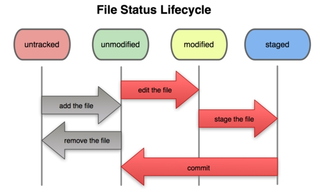

创建版本库
什么是版本库呢？
版本库又名仓库，英文名repository，可以简单理解成一个目录，这个目录里面的所有文件都可以被Git管理起来，每个文件的修改、删除，Git都能跟踪，以便任何时刻都可以追踪历史，或者在将来某个时刻可以“还原”。
用我写笔记的 public 目录来做试验。
创建一个版本库
首先，选择一个合适的地方，创建一个空目录。
打开 Git Bash：

1 | $ mkdir public 创建一个目录 |
第二步，通过 git init 命令把这个目录变成 Git 可以管理的仓库。
1 | $ git init |
把文件添加到版本库
第一步，用命令 git add 告诉Git，把文件添加到仓库：
可反复多次使用，添加多个文件
1 | $ git add * 一次性添加这个文件夹下所有的文件到仓库 |
执行上面的命令，没有任何显示，说明添加成功。
工作目录下面的所有文件都不外乎这两种状态：已跟踪或未跟踪。
已跟踪的文件：是指本来就被纳入版本控制管理的文件，在上次快照中有它们的记录，工作一段时间后，它们的状态可能是 未更新，已修改或者已放入暂存区。
而所有其他文件都属于未跟踪文件。它们既没有上次更新时的快照，也不在当前的暂存区域。
初次克隆某个仓库时，工作目录中的所有文件都属于已跟踪文件，且状态为未修改。
检查当前文件状态
要确定哪些文件当前处于什么状态，可以用 git status 命令。
1 | On branch master |
已跟踪文件的内容发生了变化，但还没有放到暂存区。要暂存这次更新，需要运行 git add 命令（这是个多功能命令，根据目标文件的状态不同，此命令的效果也不同：可以用它开始跟踪新文件，或者把已跟踪的文件放到暂存区，还能用于合并时把有冲突的文件标记为已解决状态等）。
查看已暂存和未暂存的更新
git diff 命令可以查看具体修改了文件的哪些地方。
不加参数直接输入 git diff，此命令比较的是工作目录中当前文件和暂存区域快照之间的差异，也就是修改之后还没有暂存起来的变化内容。
若要看已经暂存起来的文件和上次提交时的快照之间的差异，可以用 git diff --cached 命令。（Git 1.6.1 及更高版本还允许使用 git diff --staged，效果是相同的，但更好记些。）
1 | $ git diff |
提交更新
用命令 git commit 告诉Git，把文件提交到仓库：
1 | $ git commit -m "输入的是本次提交的说明，可以输入任意内容" |
git commit 命令执行成功后会告诉你，什么文件被改动过了。
跳过使用暂存区域
Git 提供了一个跳过使用暂存区域的方式，只要在提交的时候，给 git commit 加上 -a 选项，Git 就会自动把所有已经跟踪过的文件暂存起来一并提交，从而跳过 git add 步骤
版本穿梭
查看提交历史
git log 命令显示从最近到最远的提交日志
如果嫌输出信息太多，看得眼花缭乱的，可以试试加上 --pretty=oneline 参数
1 | $ git log |
一大串类似3628164...882e1e0的是commit id（版本号）
穿梭过去
在Git中，用HEAD表示当前版本，也就是最新的提交，上一个版本就是HEAD^，上上一个版本就是HEAD^^，当然往上100个版本写100个^比较容易数不过来，所以写成HEAD~100。
把当前版本回退到上一个版本，就可以使用git reset命令：
1 | $ git reset --hard HEAD^ |
回到未来
周星驰《上海滩赌圣》里面的一个梗，在这里就可以用上：“穿梭过去，回到未来！”
以指定回到未来的某个版本:
1 | $ git reset --hard 123456 <!-- commit id --> |
用git reflog查看命令历史，以便确定要回到未来的哪个版本。
1 | $ git reflog |